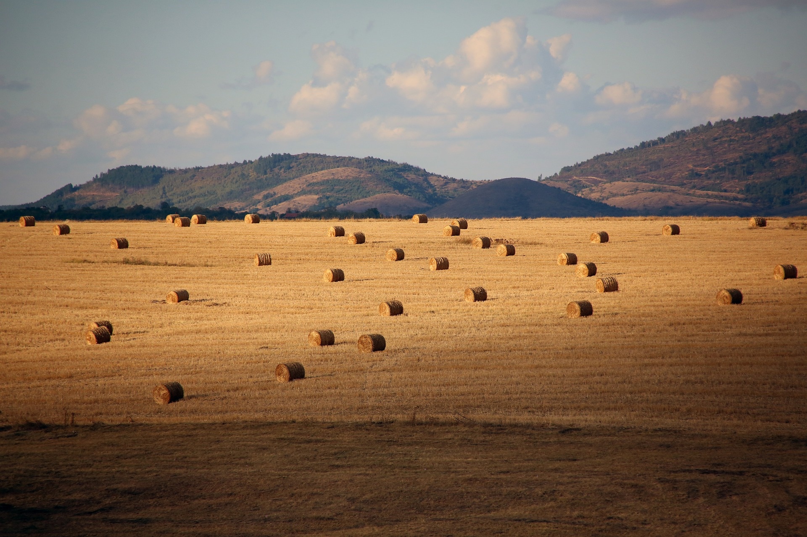

НОВИНИ
-
Новият бюджет на ЕС
С приемането на бюджета за следващия програмен период, съответните органи на Европейския съюз, за пореден път насочиха огромни средства към нерентабилни, според нас, направления.
-

Възможности за промяна на демографската ситуация в България
Демографската ситуация в България въобще не е радостна и спешното подпомагане на семейството е едно от важните неща които трябва да бъдат направени за обръщане на негативната тенденция.
-

Гледаемост и доверие към масмедиите в България
Българите гледат обществените медии, но не им вярват, те не вярват на тези медии, но ги смятат за важни за демокрацията и се информират от тях ежедневно.
-
Демографската ситуация в България в началото на третото хилядолетие
Демографската ситуация в България е обект на много проучвания и е определяна както като криза, така и като трансформация, дори и в селата.
-

Поредна криза в земеделието
Очаква се кадрова криза в българското земеделие, като се прогнозира и намаляване на доходността в сектора за целия ЕС.
-

Демографската криза в България в края на ХХ и началото на ХХI век
Отделът за населението към ООН излезе с доклад, според който през 2050 г. населението в България ще бъде с 27,9 % по-малко от това през 2015 г.
-
Възходът на страните от Югоизточна Азия
Развитието на т.нар. "бързо развиващи се" или "изгряващи" ("emerging") страни в Югоизточна Азия показва, че в близко бъдеще от тях могат да дойдат голямо количество капитали.